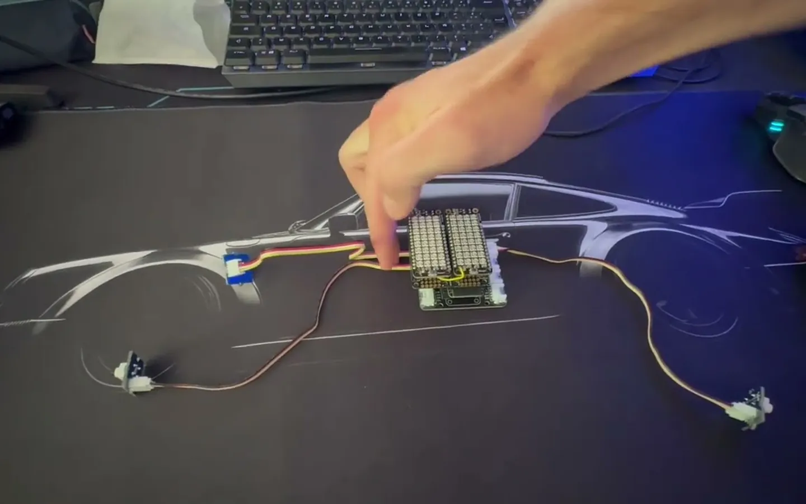

Puissance 4 sur ESP32Connect Four on ESP32
Un Puissance 4 sur cartes ESP32 et matrice de LED, avec trois modes de jeu dont un duo en réseau sans fil entre deux cartes et un mode solo contre un bot.Connect Four on ESP32 boards with an LED matrix, with three game modes including wireless two-player between two boards and a solo mode against a bot.

La vidéo se charge depuis YouTube au clic.The video loads from YouTube when you click.
Vue d'ensembleOverview
Un jeu embarqué complet sur microcontrôleur : la grille s'affiche sur une matrice de LED 8×8 et chaque joueur joue avec des boutons Grove. En mode réseau, deux cartes affichent la même grille en temps réel.A complete embedded game on a microcontroller: the grid is shown on an 8×8 LED matrix and players use Grove buttons. In network mode, two boards show the same grid in real time.
ObjectifObjective
Programmer un microcontrôleur en C++, organiser le code en classes, piloter du matériel (LED, boutons, GPIO) et faire communiquer deux cartes sans fil.Program a microcontroller in C++, structure the code in classes, drive hardware (LEDs, buttons, GPIO) and get two boards talking wirelessly.
DémarcheApproach
- Découpage en classes : Grille, Jeu, Bot, Affichage, Reseau.Code split into classes: Grid, Game, Bot, Display, Network.
- Répartition des classes dans le binôme, programme principal écrit ensemble.Classes shared out between the two of us, main program written together.
- Suivi du projet avec Trello et un diagramme de Gantt.Project tracked with Trello and a Gantt chart.
- Vidéos de démonstration en français et en anglais.Demo videos in French and English.
FonctionnalitésFeatures
- Duo local sur une carte avec 3 boutonsLocal two-player on one board with 3 buttons
- Duo en réseau : une carte par joueur, grille synchroniséeNetworked two-player: one board each, synced grid
- Solo contre un bot qui gagne, bloque et privilégie le centreSolo against a bot that wins, blocks and favours the centre
- Animation de chute du jeton, case par caseToken drop animation, cell by cell
- Écran de fin : W de la couleur du gagnant ou N pour un match nulEnd screen: W in the winner's colour, or N for a draw
Ma contributionMy contribution
L'affichage sur la matrice de LED et la communication sans fil ESP-NOW.The LED matrix display and the ESP-NOW wireless link.
TechnologiesTechnologies
Ce que j'ai apprisWhat I learned
Synchroniser deux cartesKeeping two boards in sync
Les coups sont envoyés d'une carte à l'autre avec le protocole ESP-NOW, sans routeur Wi-Fi, pour que les deux matrices affichent la même grille.Moves are sent from one board to the other over ESP-NOW, with no Wi-Fi router, so both matrices show the same grid.
Une matrice faite de deux panneauxOne matrix made of two panels
La grille 8×8 est formée de deux matrices NeoPixel 4×8 chaînées : la classe Affichage traduit chaque case en position de LED.The 8×8 grid is two chained 4×8 NeoPixel panels: the Display class maps each cell to the right LED.